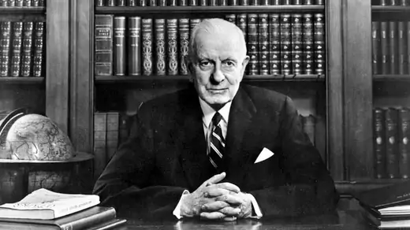

Thomas John Watson Sr. (February 17, 1874 – June 19, 1956) was an American businessman who served as the chairman and CEO of IBM.[1][2] He oversaw the company's growth into an international force from 1914 to 1956. Watson developed IBM's management style and corporate culture from John Henry Patterson's training at NCR.[3] He turned the company into a highly effective selling organization, based largely on punched card tabulating machines. A leading self-made industrialist,[4] he was one of the richest men of his time and was called the world's greatest salesman when he died in 1956.
Photo

Details
Early life
Thomas J. Watson was born in Campbell, New York, the fifth child and only son of Thomas and Jane Fulton White Watson.[5] His four older siblings were Jennie, Effie, Loua, and Emma. His father farmed and owned a modest lumber business located near Painted Post, a few miles west of Corning, in the Southern Tier region of New York.[6] Thomas worked on the family farm in East Campbell, New York and attended the District School Number Five in the late 1870s.[7] As Watson entered his teen years he attended Addison Academy In Addison, New York.[6]
Head of IBM
Charles Ranlett Flint, who had engineered the amalgamation (via stock acquisition) forming the Computing-Tabulating-Recording Company (CTR) found it difficult to manage the five companies. He hired Watson as general manager on May 1, 1914, when the five companies had about 1,300 employees. Eleven months later he was made President when court cases relating to his time at NCR were resolved.[9] Within four years revenues had been doubled to $9 million.[10] In 1924, he renamed CTR to International Business Machines. Watson built IBM into such a dominant company that the federal government filed a civil antitrust suit against it in 1952. IBM owned and leased to its customers more than 90 percent of all tabulating machines in the United States at the time. When Watson died in 1956, IBM's revenues were $897 million, and the company had 72,500 employees.
Personal life
Watson married Jeanette Kittredge, from a prominent Dayton, Ohio railroad family, on April 17, 1913. They had two sons and two daughters.
Thomas Watson, Jr. succeeded his father as IBM chairman and later served as ambassador to the Soviet Union under Jimmy Carter
Jeanette Watson Irwin married businessman John N. Irwin II, later ambassador to France
Helen Watson Buckner became an important philanthropist in New York City
Arthur K. Watson served as president of IBM World Trade Corporation and later, as ambassador to France
As a Democrat (after his criminal indictment by the Taft Administration), Watson was an ardent supporter of Roosevelt. He was one of the most prominent businessmen in the Democratic Party. He was considered Roosevelt's strongest supporter in the business community
Famous attribution
Although Watson is well known for his alleged 1943 statement, "I think there is a world market for maybe five computers," there is scant evidence he said it. Author Kevin Maney tried to find the origin of the quote, but has been unable to locate any speeches or documents of Watson's that contain this, nor are the words present in any contemporary articles about IBM.